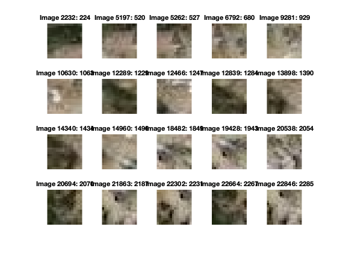
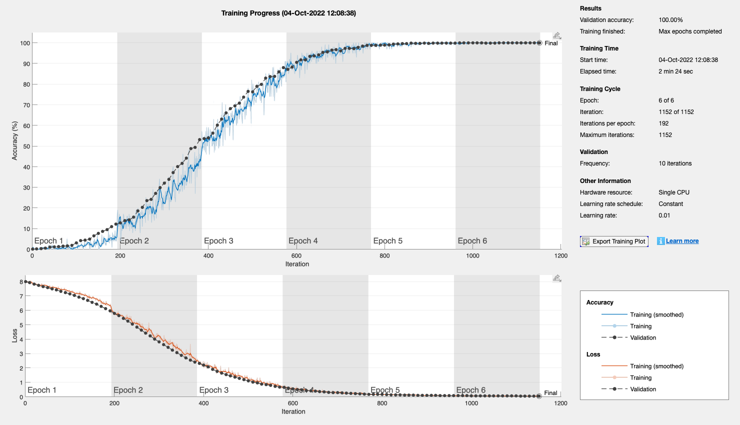

Script implementing the terrain neural net
You must have created the images in TerrainImages with CreateTerrainImages before running this script.
See also categorical, splitEachLabel, convolution2dLayer, batchNormalizationLayer, reluLayer, maxPooling2dLayer, fullyConnectedLayer, softmaxLayer, classificationLayer, trainNetwork, classify
Contents
Get the images
cd TerrainImages label = load('Label'); cd .. t = categorical(label.t); nClasses = max(label.t); imds = imageDatastore('TerrainImages','labels',t); labelCount = countEachLabel(imds); % Display a few snapshots NewFigure('Terrain Snapshots'); n = 4; m = 5; ks = sort(randi(length(label.t),1,n*m)); % random selection for i = 1:n*m subplot(n,m,i); imshow(imds.Files{ks(i)}); title(sprintf('Image %d: %d',ks(i),label.t(ks(i)))) end % We need the size of the images for the input layer img = readimage(imds,1); % Split into training and testing sets fracTraining = 0.8; [imdsTrain,imdsTest] = splitEachLabel(imds,fracTraining,'randomized');
Training
This gives the structure of the convolutional neural net
layers = [
imageInputLayer(size(img))
convolution2dLayer(3,8,'Padding','same')
batchNormalizationLayer
reluLayer
maxPooling2dLayer(2,'Stride',2) % Pool size and stride size
convolution2dLayer(3,32,'Padding','same')
batchNormalizationLayer
reluLayer
maxPooling2dLayer(2,'Stride',2)
fullyConnectedLayer(nClasses)
softmaxLayer
classificationLayer
];
disp(layers)
options = trainingOptions('sgdm', ...
'InitialLearnRate',0.01, ...
'MaxEpochs',6, ...
'MiniBatchSize',100,...
'ValidationData',imdsTest, ...
'ValidationFrequency',10, ...
'ValidationPatience',inf,...
'Shuffle','every-epoch', ...
'Verbose',false, ...
'Plots','training-progress');
disp(options)
fprintf('Fraction for training %8.2f%%\n',fracTraining*100);
terrainNet = trainNetwork(imdsTrain,layers,options);
12×1 Layer array with layers:
1 '' Image Input 16×16×3 images with 'zerocenter' normalization
2 '' Convolution 8 3×3 convolutions with stride [1 1] and padding 'same'
3 '' Batch Normalization Batch normalization
4 '' ReLU ReLU
5 '' Max Pooling 2×2 max pooling with stride [2 2] and padding [0 0 0 0]
6 '' Convolution 32 3×3 convolutions with stride [1 1] and padding 'same'
7 '' Batch Normalization Batch normalization
8 '' ReLU ReLU
9 '' Max Pooling 2×2 max pooling with stride [2 2] and padding [0 0 0 0]
10 '' Fully Connected 2401 fully connected layer
11 '' Softmax softmax
12 '' Classification Output crossentropyex
TrainingOptionsSGDM with properties:
Momentum: 0.9
InitialLearnRate: 0.01
LearnRateSchedule: 'none'
LearnRateDropFactor: 0.1
LearnRateDropPeriod: 10
L2Regularization: 0.0001
GradientThresholdMethod: 'l2norm'
GradientThreshold: Inf
MaxEpochs: 6
MiniBatchSize: 100
Verbose: 0
VerboseFrequency: 50
ValidationData: [1×1 matlab.io.datastore.ImageDatastore]
ValidationFrequency: 10
ValidationPatience: Inf
Shuffle: 'every-epoch'
CheckpointPath: ''
CheckpointFrequency: 1
CheckpointFrequencyUnit: 'epoch'
ExecutionEnvironment: 'auto'
WorkerLoad: []
OutputFcn: []
Plots: 'training-progress'
SequenceLength: 'longest'
SequencePaddingValue: 0
SequencePaddingDirection: 'right'
DispatchInBackground: 0
ResetInputNormalization: 1
BatchNormalizationStatistics: 'population'
OutputNetwork: 'last-iteration'
Fraction for training 80.00%
 Test the neural net
predLabels = classify(terrainNet,imdsTest); testLabels = imdsTest.Labels; accuracy = sum(predLabels == testLabels)/numel(testLabels); fprintf('Accuracy is %8.2f%%\n',accuracy*100) save('TerrainNet','terrainNet')
Accuracy is 100.00%
Copyright
Copyright (c) 2019, 2022 Princeton Satellite Systems, Inc. All rights reserved.